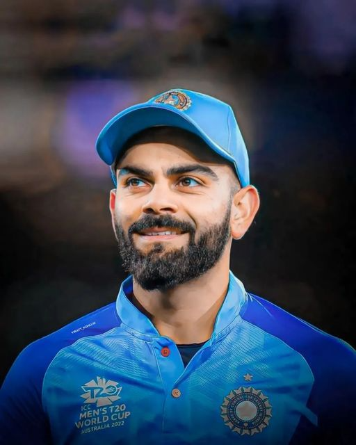

Virat Kohli
A Proud Indian Cricketer
Virat Kohli (born 5 November 1988) is an Indian international cricketer and the former captain of the Indian national cricket team. He currently represents Royal Challengers Bangalore in the IPL and Delhi in domestic cricket. Kohli is widely regarded as one of the greatest batsmen in the history of cricket, and the best of 21st century.He is the highest run scorer in T20I and IPL.Kohli scored Test hundreds in and against every country he played. He absolutely smashed records for number of matches taken to reach eight, nine, ten and eleven thousand ODI runs. He was a genuine threat to Sachin Tendulkar's record of 49 ODI and 51 Test hundreds.
Biographies
- Made a mark with impressive performances in the ICC U19 Cricket World Cup in 2008, leading India to victory
- Known for aggressive and assertive batting style.
- Appointed as the captain of the Indian Test team in 2014.
- Numerous records, including being one of the fastest to reach 8,000, 9,000, 10,000, and 11,000 runs in ODIs.
- Padma Shri, India's fourth-highest civilian award, in 2017. Rajiv Gandhi Khel Ratna, India's highest sporting honor, in 2018.
- Married Bollywood actress Anushka Sharma in December 2017.
- Considered one of the greatest batsmen in modern cricket